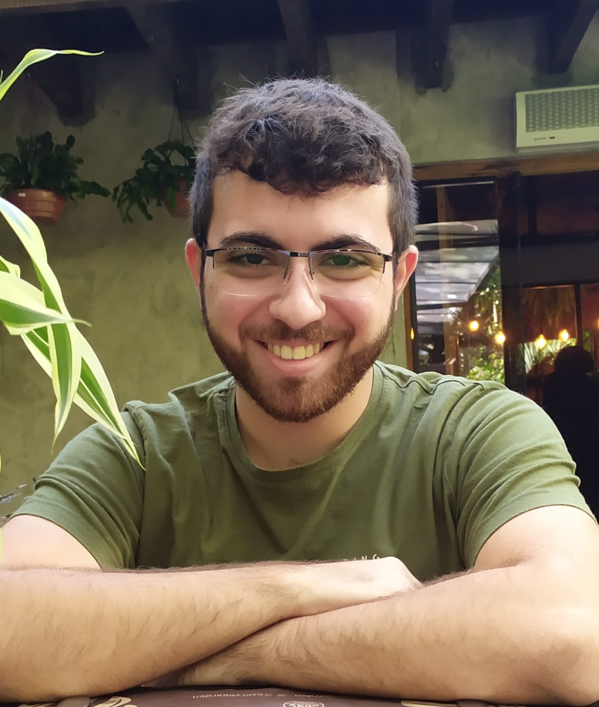

Conheci a Trybe através de um amigo e juntos decidimos iniciar o curso.
Apesar de não ter conhecimento na área de programação, com apenas dois
meses de estudo já me sinto confortável e seguro nos assuntos iniciais,
aprendi como construir uma página usando HTML e personaliza-la usando CSS.
Admiro toda a equipe envolvida na organização do curso pois está sendo uma
experiência muito construtiva e enriquecedora para minha vida profissional.